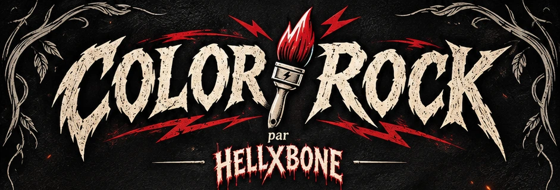

‹ Retour au jeu
‹ Dessins

HELLXBONE CLUB
Ton dessin. Tes couleurs. Ton univers.
0 %
＋ Zoom
◉ Modèle
✧ Indice
↶ Annuler
↓ Télécharger
Choisis une couleur, puis touche le même numéro.
1 · Rouge infernal